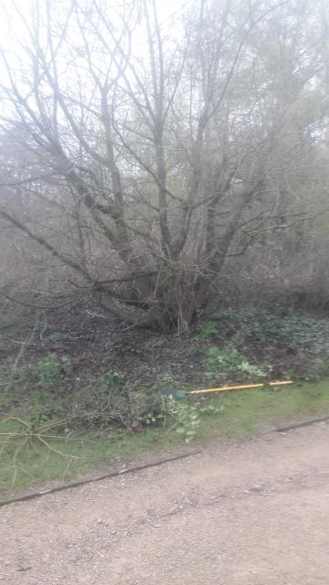

5-23 Carisbrooke Road Leicester LE2 3TQ
Tuesday 21st March 2023
The original sign indicating the tree planted by Sir David Attenborough
Sir David's Field Maple
On the 23rd April 1997 the Attenborough Arboretum was officially opened by Sir David Attenborough. One of the duties he performed on that day was to plant a Field Maple near the top of the arboretum to commemorate the occasion.
Unfortunately, as with so many specimens here, the passing years have resulted in brambles and saplings encroaching on the tree so that it was barely noticeable, and the original sign hidden.
The volunteers spent a fruitful few hours clearing away the overgrown area around the tree. Now it is visible to all and the original sign has been recovered and will be refurbished and placed back in position where all can view.
Fighting our way in.

Making good progress.

All done, and the sun has come out as well.